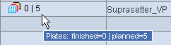

"In Process" tab: All print jobs in the process or pause status are displayed.
"Reorder" tab In this tab, you can manually change the order of jobs that were not yet processed by dragging-and-dropping them as required. In this way, you can, for example, move very urgent jobs to the top of the job list so that they are output immediately after the current job is finished (see also the Reordering Jobs).
"Requiring Attention" tab: All print jobs in the error or pause status are displayed.
"Completed" tab All print jobs which have been output without error are displayed.
"Depot" tab All stored jobs are displayed (see Storing Jobs). Stored jobs are not shown in the other tabs.
The "Complete Job List", "In Process", "Requiring Attention", "Completed" and "Depot" tabs use the following column headers:
"Job name": Name of the job.
"Job number": This number is assigned in a JDF-based system environment, e.g. by the MIS.
"Color": Color name of the separation.
"Perfecting": Shows whether the printing plate is for the front or the back.
Delete date: Date on which the job will be deleted.
Scheduled Start-Time: This scheduled time is taken from the job information of a connected Prinect Integration Manager. It is designed solely to show the scheduled start time. You cannot control output to the imagesetter with it. The scheduled times are entered manually by the user at the Prinect Scheduler.
Customer name: Customer name from the job information of a connected Prinect Integration Manager.
Versions: Information about versioning from the job settings of a connected Prinect Integration Manager.
"Product Parts": Information about which product part a job is part of displays if the special Prinect MetaDimension or Prinect Integration Manager product part functionality is used.
"Layout Name": The layout name is assigned in a JDF-based system environment, e.g. by a Prinect Integration Manager.
Sheet name: The sheet name is assigned in a JDF-based system environment, e.g. by a Prinect Integration Manager.
"Material Consumption": This displays the number of finished and planned plates in a job and, if there is a reprint of single signatures, their total number. A tooltip shows you details when you leave the cursor for a moment on an item in this column.

This information can be helpful especially with faulty/aborted jobs.
"Virtual Printer": The configurable input channels of Prinect Shooter that are implemented as hot folders are called virtual printers. Hot folders are folders that Prinect Shooter checks for incoming jobs. In the file system, you can copy jobs as Tiff-B files to a hot folder. The jobs are then automatically processed by Prinect Shooter.
"ID": Internal identification number.
"Date": Starting time for the job processing.
"Priority": Selection of the job priority (low, medium, high, urgent).
"Material": Name of the material
"Status": Displays the processing status of the job.
The "Reorder" tab is divided into two parts. For more details, see the Reordering Jobs.